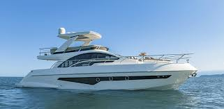
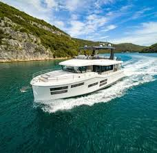
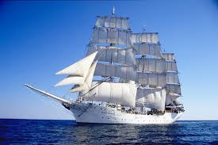

Lancha
design aerodinâmico e casco em forma de V, que melhora a estabilidade e a velocidade.

Trawler
robustez, capacidade de navegação em mar aberto e design que remete a barcos de pesca, mas com características mais direcionadas ao lazer e cruzeiros

Veleiro
é um tipo de barco que é movido parcialmente, ou completamente,por pequenas velas.